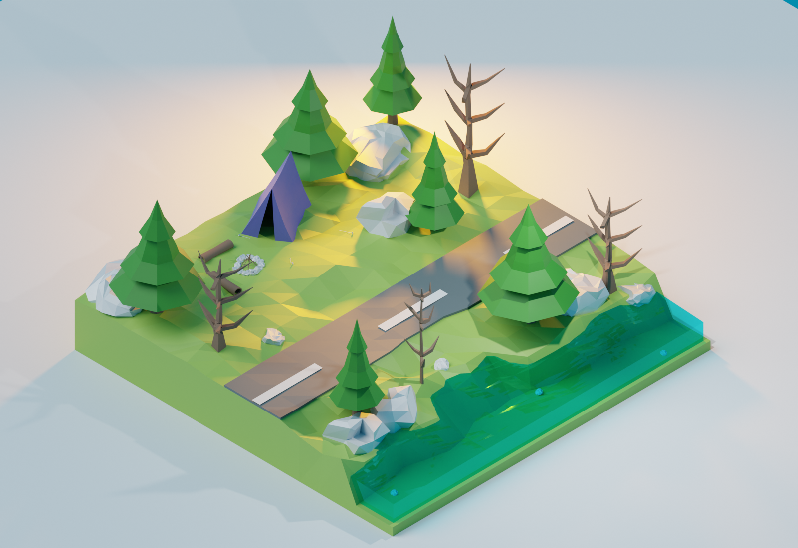

Character Design
นี่คือผลงานการออกแบบโดยใช้องค์ประกอบของ Shape Language

ในระหว่างการเรียนในคลาสนี้ ฉันได้มีโอกาสทำงานทั้งการวาดรูปและการปั้นโมเดล ซึ่งเป็นการฝึกฝนทักษะด้านศิลปะและการออกแบบในเชิงลึก การทำงานภายในคลาสนี้ทำให้ฉันได้เรียนรู้เทคนิคใหม่ๆ ในการใช้เครื่องมือและสื่อสร้างสรรค์ที่หลากหลาย รวมไปถึงการนำเสนอผลงานอย่างมีประสิทธิภาพ
การปั้นโมเดลในคลาสนี้ทำให้ฉันเข้าใจถึงกระบวนการทางเทคนิคในการสร้างสรรค์ผลงานสามมิติ การเลือกวัสดุและการใช้เครื่องมือในการปั้นได้อย่างมีประสิทธิภาพ การเรียนรู้ในด้านนี้ช่วยให้ฉันสามารถแปลงแนวคิดจากกระดาษสู่การปั้นโมเดลที่สามารถมองเห็นและจับต้องได้
ประสบการณ์จากการทำงานในคลาสเรียนไม่เพียงแต่ช่วยให้ฉันพัฒนาทักษะทางศิลปะ แต่ยังทำให้ฉันเข้าใจกระบวนการสร้างสรรค์ในทุกขั้นตอน ตั้งแต่การวางแผนออกแบบจนถึงการผลิตผลงานที่เสร็จสมบูรณ์ การเรียนรู้เทคนิคใหม่ๆ และการทำงานร่วมกับเพื่อนร่วมคลาสยังทำให้ฉันมีมุมมองที่กว้างขวางในการสร้างผลงานและการแก้ไขปัญหาที่เกิดขึ้นในระหว่างการทำงาน
นี่คือผลงานการออกแบบโดยใช้องค์ประกอบของ Shape Language
ผลงานชิ้นนี้เป็นการฝึกฝนการวาดภาพและทดลองเทคนิคการลงสีใหม่ๆ เพื่อพัฒนาทักษะด้านศิลปะของฉัน โดยฉันได้ใช้เวลาศึกษาการจัดองค์ประกอบ สีสัน และรายละเอียดต่างๆ เพื่อให้ผลงานมีมิติและสื่อถึงอารมณ์ที่ต้องการ
แม้จะเป็นงานวาดเล่นเพื่อการฝึกฝน แต่ประสบการณ์จากการสร้างสรรค์ผลงานชิ้นนี้ทำให้ฉันรู้สึกสนุกและเพิ่มความมั่นใจในความสามารถด้านการออกแบบของตัวเอง พร้อมที่จะต่อยอดไปสู่ผลงานที่ซับซ้อนและมีรายละเอียดมากยิ่งขึ้นในอนาคต


นี่คือผลงานการออกแบบโดยใช้โปรแกรม Magica Voxel
ในผลงานนี้ ฉันได้เริ่มต้นการเรียนรู้และทดลองใช้โปรแกรม Blender เป็นครั้งแรก โดยมุ่งเน้นไปที่การปั้นโมเดล 3D ซึ่งเป็นประสบการณ์ที่น่าตื่นเต้นและเต็มไปด้วยความสนุกสนาน ตลอดกระบวนการ ฉันได้เรียนรู้การใช้เครื่องมือและฟีเจอร์ต่างๆ ใน Blender
การปั้นโมเดลใน Blender ทำให้ฉันได้เรียนรู้การพัฒนาทักษะในด้านการคิดเชิงพื้นที่ และการสร้างสรรค์องค์ประกอบ 3D ที่มีความสมจริงและมีคุณภาพ รวมทั้งได้ฝึกฝนการสังเกตและแยกแยะรายละเอียดต่างๆ ในการสร้างโมเดลที่เหมาะสมกับงานหรือคอนเซปต์ที่ต้องการ
ประสบการณ์ครั้งนี้ไม่เพียงแต่ช่วยเสริมสร้างทักษะในด้านการใช้งานโปรแกรม แต่ยังเป็นการเปิดโลกใหม่ให้กับการสร้างผลงาน 3D ที่น่าสนใจและน่าท้าทาย โดยการเรียนรู้ในครั้งนี้ทำให้ฉันได้รับแรงบันดาลใจและความมุ่งมั่นในการพัฒนาฝีมือในด้านการปั้นโมเดลและการสร้างงาน 3D ต่อไป

ในไฟนอลโปรเจคนี้ ฉันได้รับโอกาสท้าทายตัวเองในการปั้นโมเดล 3D ตามที่ได้ออกแบบไว้ ซึ่งทำให้ฉันรู้สึกสนุกและมีแรงบันดาลใจในการทำงานเป็นอย่างมาก กระบวนการนี้ทำให้ฉันได้ทดสอบทักษะต่างๆ ที่เรียนรู้มา รวมถึงการใช้เทคนิคใหม่ๆ ในการปั้นและออกแบบให้ตรงกับคอนเซปต์ที่วางไว้ โดยต้องคำนึงถึงรายละเอียดที่สมจริงและความแม่นยำในการถ่ายทอดองค์ประกอบที่ออกแบบ
การทำงานในโปรเจคนี้ทำให้ฉันได้เรียนรู้วิธีการจัดการกับความท้าทายที่เกิดขึ้น และวิธีการพัฒนาความคิดสร้างสรรค์เพื่อให้ผลงานออกมาตรงตามความต้องการที่ตั้งไว้ ฉันได้ฝึกฝนการใช้เครื่องมือในการปั้นอย่างมีประสิทธิภาพ รวมทั้งการปรับแต่งรูปร่างและพื้นผิวให้เหมาะสมกับงานที่ทำ
โดยรวมแล้ว โปรเจคนี้ไม่เพียงแต่เป็นการสร้างผลงานที่มีคุณภาพ แต่ยังเป็นการเปิดโอกาสให้ฉันได้พัฒนาทักษะในด้านการออกแบบและการปั้นโมเดล 3D ที่สามารถนำไปใช้ในงานจริงได้ต่อไป
ธีม : แฟนตาซีล้ำสมัย
องค์ประกอบสำคัญ :เกาะลอยฟ้า, คริสตัล, ปราสาท, น้ำตก และเรือเหาะ
โทน : ใช้สีฟ้าและม่วง สื่อถึงความรู้สึกสงบและลึกลับ
STORY : สภาเวทย์มนต์และหอดูดาวแห่งอีเทอร์เรีย (Etherea)
ในโลกของเวทมนตร์ มีสถานที่ศักดิ์สิทธิ์ชื่อว่า "สภาเวทย์มนต์แห่งอีเทอร์เรีย" ซึ่งตั้งอยู่บน เกาะลอยฟ้า ที่ซ่อนตัวอยู่เหนือเมฆในท้องฟ้าสีคราม สภาแห่งนี้ไม่ได้เป็นเพียงศูนย์กลางของการศึกษาเวทมนตร์ แต่ยังเป็น หอดูดาว ที่เชื่อมโยงพลังงานของดวงดาวและจักรวาลให้เข้ากับโลก
นานมาแล้ว ในยุคมืดมน ดวงดาวบนท้องฟ้าถูกบดบังด้วยหมอกดำที่เกิดจากพลังด้านลบที่มนุษย์สร้างขึ้น สภาเวทมนตร์แห่งอีเทอร์เรียก่อตั้งขึ้นโดยเหล่านักปราชญ์และผู้วิเศษผู้ยิ่งใหญ่ ได้ถือกำเนิดขึ้นเพื่อไขปริศนาแห่งดวงดาว และฟื้นฟูสมดุลระหว่างพลังแห่งธรรมชาติกับเวทมนตร์